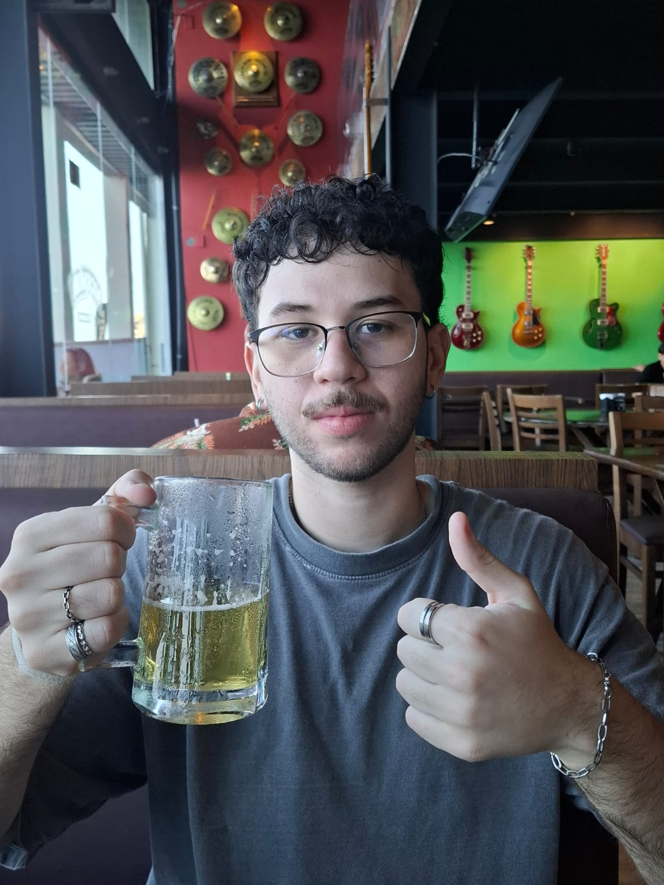

Todo-List-API (Spring Boot)
JavaAPI RESTful de lista de tarefas com Java 21, Spring Boot, autenticação JWT e PostgreSQL.
Desenvolvedor backend Java focado em Spring Boot, APIs REST e infraestrutura na AWS. Recife, Pernambuco — Brasil.
Sou estudante de Ciência da Computação na Universidade Maurício de Nassau (2023 — presente) e desenvolvedor backend Java júnior. Construo APIs REST com Java, Spring Boot e bancos relacionais, com autenticação via JWT e documentação com Swagger/OpenAPI.
Tenho experiência de equipe em metodologias ágeis (Scrum, Kanban e XP), e estudo computação em nuvem na AWS, com a certificação AWS Certified Cloud Practitioner. Também trabalho com testes automatizados, Docker e Git no dia a dia.

API RESTful de lista de tarefas com Java 21, Spring Boot, autenticação JWT e PostgreSQL.
Plataforma de testes de carga (SRE — Stress & Resilience Evaluator) com motor paralelo de requisições.
Assistente virtual de apostas desenvolvido durante o Hackathon EDScript, onde recebeu o prêmio de melhor modelo de negócio.
Jogo de xadrez completo desenvolvido em Java puro com aplicação de Programação Orientada a Objetos e regras clássicas no terminal.